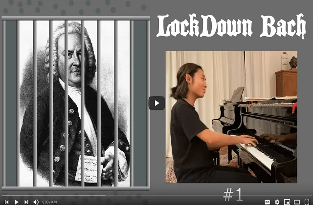

Nieuws ·
Aankondiging Bach Cantates Nijmegen

Dit bericht uit ons archief verscheen op 26 februari 2021 op NieuwsNijmegen.nl. Data, tijden en prijzen kunnen inmiddels anders zijn.
Geachte muziekliefhebber,
Onze Bach-lockdown is helaas weer verlengd, waardoor ook in maart geen cantate zal klinken in de Petruskerk. We moeten het nog even volhouden!
Het goede nieuws is dat we de cantate van maart alsnog zullen uitvoeren op zondag 11 april. Op deze dag staan twee uitvoeringen op het programma: een vroege om 19:00 en een late om 21:00u.
AANKONDIGING
LET OP GEWIJZIGDE DATUM EN AANVANGSTIJDEN!
19:00u en 21:00u
zondag 11 april 2021
BWV 125 “Mit Fried und Freud ich fahr dahin”
voor solisten en orkest.
LET OP GEWIJZIGDE DATUM EN AANVANGSTIJDEN!
19:00u en 21:00u
En nog steeds met een streng protocol: slechts 30 zitplaatsen, op 1,5 meter afstand van elkaar (behalve voor familieleden), begeleiding bij binnenkomen en verlaten van de kerk, en alle gebruikelijke zorgvuldigheidseisen (geen handen schudden; hoesten in elleboog; etc.). De kerk wordt vooraf en tussentijds grondig geventileerd.
We zullen het nu ook zonder drankjes na afloop moeten doen. Sober dus, maar we genieten weer van het werk van onze grote Bach. We spelen én zingen nu alles in enkele bezetting.
Het is inmiddels duidelijk dat onze cantate voor januari niet door kan gaan. Nu hopen we in februari weer met elkaar muziek te mogen maken, en dat doen we nu in twee uitvoeringen: om 19.00 uur en om 21.00 uur. Met Bachs BWV 125, die vorig jaar op het laatste moment niet door kon gaan vanwege de tornado die over ons kwam waaien. Wel nog steeds met een streng protocol: beperkt aantal zitplaatsen, op 1,5 meter afstand van elkaar (behalve voor mensen uit hetzelfde huishouden), begeleiding bij binnenkomen en verlaten van de kerk, en alle gebruikelijke zorgvuldigheids-eisen. De kerk wordt telkens vooraf grondig geventileerd. We zullen het ook nog steeds zonder drankjes na afloop moeten doen. Sober dus, maar we genieten weer van het werk van onze grote Bach.
De cantate betreft het feest van Maria die, naar joodse traditie, 40 dagen na de geboorte van Jezus in de tempel kwam om haar zoon aan de priesters te tonen. En op dat moment wordt Jezus door de oude Simeon herkend als de door God beloofde Heiland. Hij neemt het kind in zijn armen en heft een loflied aan: “Nu laat gij, Heer, uw dienstknecht gaan in vrede” (Lucas 2: 22-35). Deze lofzang van Simeon werd door Luther in 1524 bewerkt tot het lied “Mit Fried und Freud fahr ich dahin”. En dat vormde precies twee eeuwen later voor Bach weer de bron voor deze cantate.Het is een koraal-cantate naar het stramien dat Bach in zijn tweede jaar in Leipzig volgde. Met een groot openingsdeel waarin de sopraan in lange lijnen het eerste couplet zingt, omspeeld door flauto traverso, oboe d’amore, fagot, en strijkersensemble, en omzongen door de andere stemmen. Daarop volgt een ontroerende aria voor de alt: “Ook in mijn sterven wil ik naar u, mijn Heiland, uitzien”. En dan zingt de bas het tweede vers, begeleid door de strijkers, met tussendoor zijn persoonlijke opmerkingen. Na deze drie droevig gestemde delen breekt het licht door, in een virtuoos duet voor tenor en bas, met daaromheen geweven een jubelend duet voor twee soloviolen plus continuo: “Een onbegrijpelijk licht vervult de ganse aarde”. Met een recitatief leidt de alt, als vaak bij Bach de persoonlijke stem van de gelovige, ons tenslotte naar het door allen samen mee-geneuriede laatste vers van Luthers koraal.
Bach Cantates Nijmegen